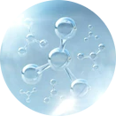

SpO2, also known as oxygen saturation, is a measure of the amount of oxygen-carrying
hemoglobin in the blood relative to the amount of hemoglobin not carrying oxygen.
When you breathe, oxygen in the air enters your lungs and sticks on a carrier protein named hemoglobin inside your red blood cells. This same red cell release carbon dioxide back into the lung and expel it from your body when you exhale. Blood oxygen saturation is a core indicator of the oxygen supply to cells and tissues.
The oxygen level in your blood decreases slightly while exercising because physical activities lower the amount of oxygen that binds to hemoglobin. When you're working out, your body typically adapts to different levels of oxygenation by increasing your breathing rate. Thus, during vigorous exercises, you breathe more heavily and rapidly because your body isn't getting enough oxygen. Your heart rate increases and the muscles are supplied with needed oxygen. Good blood oxygenation is essential to supply the energy of muscles to function well.
Adequate blood oxygen saturation keeps you away from physical illness and lung disease. There're 4 super accessible tactics that you can practice in daily life to increase your SpO2 level. 1. Exercise. The body has to work to keep SpO2 levels up during exercise, which over time can increase SpO2 levels when not exercising. 45 minutes of cardio like swimming, jogging, or dancing at least three times frequency a week can effectively improve SpO2 levels. 2. Go Green. Add more green vegetables like broccoli, spinach, and kale into your diet. They are beneficial because they are full of minerals and vitamins which your body utilizes to aid in the uptake of oxygen.
Normally, the oxygen saturation level falls between 95% and 99%. When it is lower than 90%, it is time you should pay attention to.
Sp02 level is Normal
maintain Your Regular Deit
Normal Heart Rate
Sweating
Disorientation
Slow heart rate
Pneumonia
Severe asthma attack
Being at high altitudes